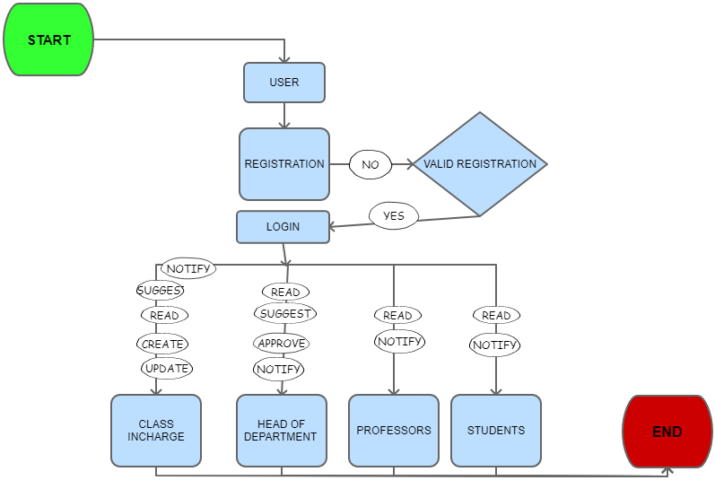

Automated Timetable Generator

Executive Summary
 Time table scheduling has been in human requirements since all thought of managing time effectively. It is widely used in schools, and other fields of teaching and working like crash courses, coaching centers, training programs, etc. In the early days, timetable scheduling was done manually with one single person or some group involved in the task of scheduling it with their hands, which takes a lot of effort and time. While scheduling even the smallest constraints can take a lot of time and the cases are even worse when the number of constraints or the amount of data to deal with increases. In such cases, a perfectly designed timetable is reused for the whole generation without any changes. So the basic problem was to design a time table generator that could help create an automated timetable to save time in every aspect.
Time table scheduling has been in human requirements since all thought of managing time effectively. It is widely used in schools, and other fields of teaching and working like crash courses, coaching centers, training programs, etc. In the early days, timetable scheduling was done manually with one single person or some group involved in the task of scheduling it with their hands, which takes a lot of effort and time. While scheduling even the smallest constraints can take a lot of time and the cases are even worse when the number of constraints or the amount of data to deal with increases. In such cases, a perfectly designed timetable is reused for the whole generation without any changes. So the basic problem was to design a time table generator that could help create an automated timetable to save time in every aspect.
The main motive is to design a new application that can be used on mobile phones so that any student or any teacher can view and update their day time table whenever or wherever they want. They can even send a notification to the children of the respective class if some important notice is there to be shared. We will develop an application that helps to create and update a timetable, set reminders for the task, notices for unavailability of the teacher, provide a proxy for them, etc.
Goals & Objectives
To provide on-time services and easy way to teacher and students for the management of time table. The goal is to bring student and teacher better management services. The objective is that the product should be able to generate its own time table according to the user inputs and constraints.
Problem Analysis

According to all the survey and research we performed, we came across some common problems they are:-
- Student use dairy or copy to keep a record of time table, which sometimes gets lost or misplaced.
- Teachers keep pages and carry them along.
- Some institutes pin the class timetable in the notice board, so after every lecture students and teachers have to go to the notice board to see which lecture it is.
- There is no such famous app that all the colleges or schools use(so we need an app).
- Some institutes send the timetable to the students and teachers through WhatsApp or some other applications, in which it gets very perplexing to find that document after a time as many new messages come and the document becomes old.
- Generating a timetable for all the classes in the institution is very back-breaking work, it takes a lot of time.
Applied Technologies
- Front-end :- We have used HTML(for the structure of UI), CSS(for the looks of UI, JavaScript and bootstrap for UX.
- Database :- We have used MongoDB for the saving database.
- Framework :- The main JavaScript framework we have used is for UX Expressjs.
- Host :- We have hosted our website using Amazon Ec2.

Basic Idea
We will develop a multi-platform application (which will work on all kinds of systems, like mobile phones, tablets, computer, etc), this application will consist of the solution to various problems and they are:-
- This app will contain the ability to generate time table according to the input by the user.
- User can give input about the number of lectures they need for any particular subject in a session, week, or day.
- The app will pop a message in the teacher’s mobile phone a minute before their lecture starts having information about which subject they have to take and in which class.
- The app will also have the feature that if by chance teacher is not going to take his/her lecture in any class he/she can send a notification to all the students of that class and that message will also go to the HOD who will arrange the proxy for the same.
- The app will also send the notification to all the teachers 5 minutes before the college/school starts for their attendance, so that HOD's and all Students can know if their teachers are present or not on that day.

Application Overview
The app will be made for three sections:-
- Administrator
- Teacher
- Student

The function of the administrator module is to look after all the activities and if the app is working properly, it is also responsible for providing the authorities; it will look after the responsibility of adding, deleting, editing entries in the master timetable.
The functions of the Lecturer module are to view the timetable for the respective lecturer. The teacher can schedule the cancellation of any class in the whole semester. This will send a notification to the associated students with that class.
The functions of the Student module are to view the class of any day of the week. The student can further update his/her profile, group, or batch at any point of time.
One powerful feature of the system is to interlink Lecturer and Student modules in such a way that, whenever a Lecturer wishes to cancel a particular class in the respective schedule, all the students linked with that class will get notified. The system also contains a database, which stores the lecturers and students details, which can only be seen by the admin.
Working
The working of the automated app is as follows:-
First of all, The institution needs to register themselves in the app providing all the details of their staffs, students, and their respective roles in the organization.
If registration gets validated than all their data will get stored in the database.
Then, the user will first need to register them, than according to the details sent by their organization they will be allot their module.
Note:-The application consists of 4 sections, namely:- Class incharge, Head of department, Professors, Students.
All the sections have different-different options when they login.
Options available for:-
Creating the time table:-
- The class incharge will create a suggestion containing all the info’s, like the number and name of subjects, what to do with the lengthy or tough subject, whether to keep them before lunch or at what time slot, and all.
- This suggestion will be sent to HOD for approval or any other suggestions that are needed to be added in the time table.
- The Class incharge will add the HOD's suggestion into his suggestion and again send it to the HOD.
- Now HOD either approves the timetable or gives more suggestions.
- Once the timetable is approved by HOD it will be updated in the database and a notification will be sent to all that "time table has been updated".

Sending a Notice:-
Only the HOD has the authority to write a notice.
Leave Approval:-
- If the student has sent the notice for approval of the leave (the notice should have a proper reason) then the notice will be sent to the Class Incharge for approval. After approval (accepted or denied) notification will be sent to the respective student.
- If the Class Incharge or the professor has sent the notice for approval of leave, then it will be sent to HOD, After HOD's response, the notification will be sent to them.
Deployment
The product was deployed using Amazon cloud services. For institutes wanting to operate on local servers, the product can be adjusted to their needs
To secure users' authentication Oauth2 and JWT were applied. Plenty of other security features is applied to prevent browsers from caching sensitive data of the users.
Result

The app integrates a semester-wise calendar, daily attendance, and leave. Teachers can punch in the attendance of the student as well as their own. Result is that the time and paper-consuming methods of marking attendance are eliminated.
Activities and subjects are allotted a particular span and time based on their nature.
The timetable management system is a unanimous requirement for planning class timings in school. The system is deployed to schedule a new class, cancel an existing class, and making other changes to a timetable. It is simple and saves time and energy.
Time table management will helped in scheduling practical and theory classes with suitable timings thus providing you a quality timetable, improving productivity and efficiency.